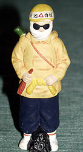
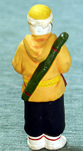
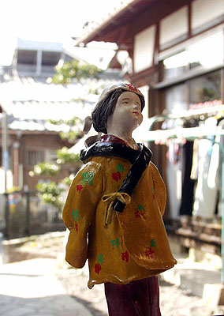

<!DOCTYPE HTML PUBLIC "-//W3C//DTD HTML 4.01 Transitional//EN">
<HTML>
<HEAD>
<META http-equiv="Content-Type" content="text/html>
<META http-equiv="Content-Style-Type" content="text/css" media="all">
<TITLE>みいけ展示室</TITLE>
</HEAD>
<BODY>
<BLOCKQUOTE>
<TABLE>
  <TBODY>
    <TR>
      <TD width="516">
      <P class="MsoNormal" style="text-indent:71.65pt;mso-char-indent-count:4.92"><B style="mso-bidi-font-weight:normal"><FONT color="red" size="+1">展示品 1</FONT><SPAN lang="EN-US" style="font-size:16.0pt;
mso-font-width:90%"></SPAN></B><BR>
      </P>
      <TABLE>
        <TBODY>
          <TR>
            <TD width="91"></TD>
            <TD width="91"></TD>
            <TD width="404">　　　<B>ホッパー人形</B><P>
            　　（提供　東川さん）
            </TD>
          </TR>
        </TBODY>
      </TABLE>
      <p class=MsoNormal style='text-indent:11.0pt;mso-char-indent-count:1.0;
line-height:17.0pt;mso-line-height-rule:exactly'><FONT face="MS UI Gothic">ホッパー人形。高さ16センチ
メートル。せともの製。三井鉱山四山社宅で三池主婦会員だった東川さんの母親が夫の形見として所蔵していたもの。<BR>
　製作者はナカジマさん（故人）。三池労組直接雇用の、宣伝カー「はたかぜ号」の運転手。その他、組合の看板づくりやポスター
描きもしていた。趣味と実益を兼ねて人形を製作していたらしい。<spanlang=EN-US style='font-size:11.0pt'></span><BR>
　ホッパースタイルは三池闘争における象徴的なスタイルであった。ヘルメットにサングラス、口には手ぬぐい。ヤッケの背には竹筒。
腰には荒縄。手にはホッパーパイプを手にし、腹巻の中には分厚い雑誌を入れた。「暴力団に刺されてもいいようにだ」と親がよく言って
いた。これを当時警察は、現地警備本部が出していた陣中新聞の連載漫画「三池炭労争議警備マンガ日記　風刺前線」において、「ホ
ッパースタイル。まるで強盗犯人か、殺人犯人の服装である。」と揶揄（やゆ）したが、武力で向かってくる警察機動隊や暴力団に対
する精一杯の自衛手段であった。
</FONT></p>
      </TD>
    </TR>
  </TBODY>
</TABLE>
</BLOCKQUOTE>

<BLOCKQUOTE>
<TABLE>
  <TBODY>
    <TR>
      <TD width="516">
      <P class="MsoNormal" style="text-indent:71.65pt;mso-char-indent-count:4.92"><B style="mso-bidi-font-weight:normal"><FONT color="red" size="+1">展示品 2</FONT><SPAN lang="EN-US" style="font-size:16.0pt;
mso-font-width:90%"></SPAN></B><BR>
      </P>
      <TABLE>
        <TBODY>
          <TR>
            <TD width="91"></TD>
            <TD width="404">　　　<B>三池の主婦の子守唄人形</B><P>
            </TD>
          </TR>
        </TBODY>
      </TABLE>
      <p class=MsoNormal style='text-indent:11.0pt;mso-char-indent-count:1.0;
line-height:17.0pt;mso-line-height-rule:exactly'><FONT face="MS UI Gothic">「三池の主婦の子守唄人形」の作者は、西高（旧姓）美代子さん。
「紙粘土で作った」。同人が三池労組宮浦支部に勤務していた1963年11月9日、三川鉱炭塵大爆発が発生。お父さんの西高辰男さんも死者458名の中の
１人だった。辰男さんが47歳、美代子さんが24歳の時のことである。三池闘争が生んだ荒木栄の「三池の主婦の子守唄」の三番で、「燃える三池の
火の柱　ひろがれ国の隅々に　かあちゃん達の正しさが　勝利の朝を呼んでいる　眠れ坊やよ　安らかに」と唄われている。三池闘争は、まさしく、
こどもを背負いながらのかあちゃん達の闘いでもあった。そんなかあちゃん達の苦労と誇りが、この人形に込められている。
</FONT></p>
      </TD>
    </TR>
  </TBODY>
</TABLE>
</BLOCKQUOTE>

</BODY>
</HTML>